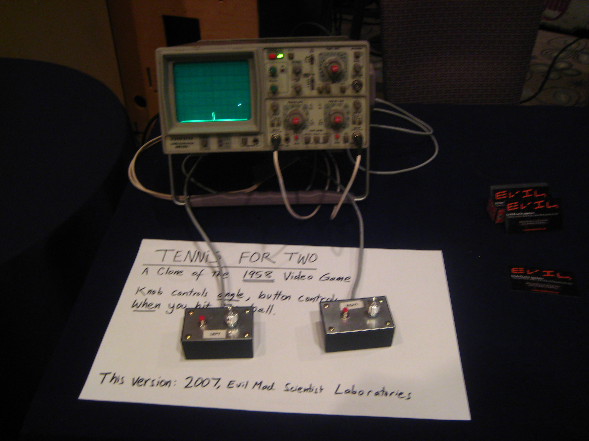

O Videogame ou game é uma disputa competitiva, executada no formato de um jogo eletrônico. O jogador permanece diante de um veículo que transmite as imagens do confronto lúdico, quase sempre uma TV ou o dispositivo de um computador. Normalmente estende-se este termo também para definir o suporte no qual os games são processados, conhecido como console.
Ao que parece, o físico William Higinbotham, integrante do projeto Manhattan, responsável pela produção da primeira bomba atômica, foi o criador do Videogame, em 1958, mas inconsciente da importância de sua obra-prima ele não se preocupou em patenteá-la, portanto não foi oficialmente considerado seu artífice.

No auge da Guerra Fria, ele elaborou um mecanismo que incrementasse o número de visitantes do Brookhaven National Laboratories, sediado em Nova York, pois o governo norte-americano tinha como intenção exibir seu potencial nuclear diante de seu povo. Desta forma ele produziu um jogo de tênis com apenas dois traços primitivos e uma bola, batizando-o de Tennis Programming ou Tennis for Two, exposto em uma tela de 15 polegadas e projetado para ser processado em um computador analógico.
Tennis for Two recurso utilizado por William o surpreendeu, pois lhe garantiu um êxito sem igual; mas nem este surpreendente retorno foi suficiente para que ele decidisse patentear seu invento e comercializá-lo. Assim, ficou célebre apenas como um dos criadores da bomba atômica, e a lembrança de sua participação na criação dos videogames tornou-se quase nula.
Do primitivo videogame de Higinbotham, o game evoluiu da simulação de jogos convencionais, tais como os de damas e xadrez, para disputas e confrontos expositivos.
Em 1966, o engenheiro eletrônico Ralph Baer, alemão refugiado nos Estados Unidos durante a Segunda Guerra Mundial, considerado hoje o pai dos consoles de games, vislumbrou a oportunidade de criar um equipamento que processasse jogos eletrônicos por meio de sua veiculação na televisão, com poucos recursos financeiros.
Isto ocorreu quando Baer trabalhava para a Sander Associates. Contando com a contribuição de seus amigos e companheiros de trabalho, o primeiro fruto de suas experiências foi o 'chasing game', elaborado em 1967, um rústico game de Ping Pong, no qual duas figuras no formato quadrado podiam ser manuseadas pelo competidor, e assim deslocadas ao longo da tela.
Seu inventor o patenteou logo em seguida e, um ano depois, expôs o primeiro modelo do videogame, designado de Brown Box, o qual consistia de disputas de futebol, vôlei e tiro. Portanto, não foi o modelo Atari o primeiro game a ser comercializado no mercado de videogames, mas sim este ancestral dos games.
A Magnavox, uma filial da Philips sediada na Holanda, imediatamente se dispôs a lançar para o público consumidor o primeiro console de videogame, intitulado Odyssey 100. Deste primeiro console aos Nintendos, PlayStations e Xbox de hoje, este filão produtivo converteu-se, em princípios do século XXI, em uma empresa extremamente rendosa, captando assim investimentos de monta, que lhe permitem competir com a esfera cinematográfica e até mesmo transcender seus lucros.